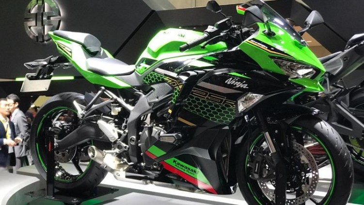

SJ GARAGE
BUY-SELL HIGH QUALITY BIGBIKE
BUY-SELL HIGH QUALITY BIGBIKE

Kawasaki Ninja ZX-25R is planned to be launched on 4 April 2020 yesterday. However, due to an outbreak that was sweeping Indonesia and various parts of the world, its launch was postponed. Until now, the motorbike that has been much awaited by motor sport lovers has not been published. Even so, PT Kawasaki Motor Indonesia is not rational to tempt the enthusiasts of the Ninja ZX-25R. From his Youtube channel, the green manufacturer is giving dyno run impressions of the 250 cc four-cylinder motorbike. But instead of showing the dyno results, the Kawasaki Indonesia video only showed off the engine's shrill sound at high rpm.
This video was uploaded on Friday (17/4) which shows a room with a dyno engine. On top of the dyno engine the Ninja ZX-25R has been prepared neatly. Then there is a rider who rides it and turns on the motor until it touches the red line. However in this video, there is not much information that can be known. Even the dyno test results or engine specifications of the Kawasaki Ninja ZX-25R are still tightly closed. The information seems to have to wait for the official launch conducted by PT Kawasaki Motor Indonesia. As additional information, the latest news about Kawasaki Indonesia is delaying the launch of this motorbike from the initial plan at the Bike Week event in Ancol.t.Back to News